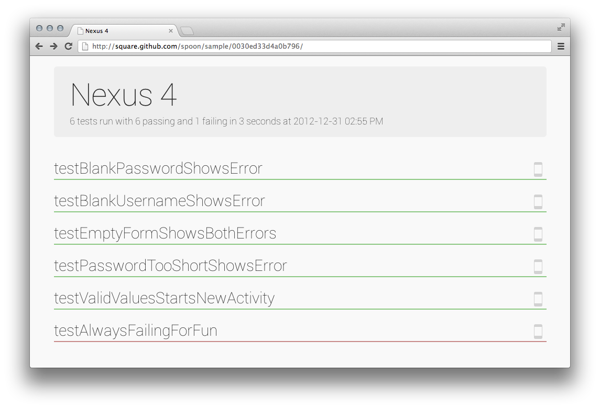
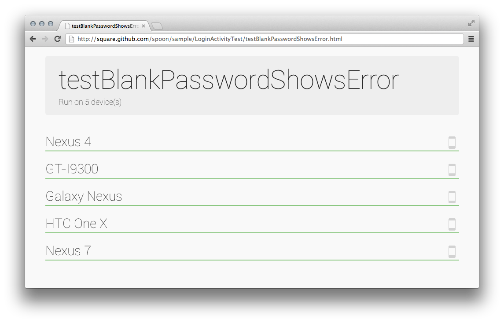

Introduction
Android's ever-expanding ecosystem of devices creates a unique challenge to testing applications. Spoon aims to simplify this task by distributing instrumentation test execution and displaying the results in a meaningful way.
Instead of attempting to be a new form of testing, Spoon makes existing instrumentation tests more useful. Using the application APK and instrumentation APK, Spoon runs the tests on multiple devices simultaneously. Once all tests have completed a static HTML summary is generated with detailed information about each device and test.

With the high-level output you can immediately see whether or not a test failure is specific to a single device or all devices. This view is designed to be displayed on a dedicated monitor or TV.

Spoon will run on all targets which are visible to adb devices. Plug in multiple different phones and tablets, start different configurations of emulators, or use some combination of both!
The greater diversity of the targets in use, the more useful the output will be in visualizing your applications.
Device View
The device view outlines the results of each test one a single device. This is useful for tracking down device-specific failures of individual tests.

Test View
The test view shows the results of a single test across all of the devices it was executed on.

Screenshots
In addition to simply running instrumentation tests, Spoon has the ability to snap screenshots at key points during your tests which are then included in the output. This allows for visual inspection of test executions across different devices.
Taking screenshots requires that you include the spoon-client JAR in your instrumentation app. In your tests call the screenshot method with a human-readable tag.
Spoon.screenshot(activity, "initial_state"); /* Normal test code... */ Spoon.screenshot(activity, "after_login");
The tag specified will be used to identify and compare screenshots taken across multiple test runs.
Screenshots are displayed in order in both the device view and the test view:

You can also view each test's screenshots as an animated GIF to gauge the actual sequence of interaction.
Download
Spoon Runner JAR Spoon Client JAR
The source code to the runner, screenshot library, and sample applications as well as the website is available on GitHub.
Maven
If you are using Maven for compilation you can declare the screenshot library as a dependency.
<dependency>
<groupId>com.squareup.spoon</groupId>
<artifactId>spoon-client</artifactId>
<version>(insert latest version)</version>
</dependency>
Sample
Included with Spoon is a sample application and instrumentation tests to demonstrate both the usage as well as provide an example of the output.
The sample shows a simple login screen and an ordering wizard run on a few devices. Some of the tests have been constructed so that they will fail on various devices to give a better idea of what the output looks like.
Execution
Spoon was designed to be run both as a standalone tool or directly as part of your build system.
Command Line
You can run Spoon as a standalone tool with your application and instrumentation APKs.
java -jar spoon-runner-1.0.0-jar-with-dependencies.jar \
--apk example-app.apk \
--test-apk example-tests.apk
By default the output will be placed in a spoon-output/ folder of the current directory. You can control additional parameters of the execution using other flags.
Options:
--apk Application APK
--fail-on-failure Non-zero exit code on failure
--output Output path
--sdk Path to Android SDK
--test-apk Test application APK
--title Execution title
Maven
If you are using Maven for compilation, a plugin is provided for easy execution. Declare the plugin in the pom.xml for the instrumentation test module.
<plugin>
<groupId>com.squareup.spoon</groupId>
<artifactId>spoon-maven-plugin</artifactId>
<version>(insert latest version)</version>
</plugin>
The plugin will look for an apk dependency for the corresponding application. Typically this is specified in parallel with the jar dependency on the application.
<dependency>
<groupId>com.example</groupId>
<artifactId>example-app</artifactId>
<version>${project.version}</version>
<type>jar</type>
<scope>provied</scope>
</dependency>
<dependency>
<groupId>com.example</groupId>
<artifactId>example-app</artifactId>
<version>${project.version}</version>
<type>apk</type>
<scope>provied</scope>
</dependency>
You can invoke the plugin by running mvn spoon:run. The execution result will be placed in the target/spoon-output/ folder.
For a working example see the sample application and instrumentation tests in the spoon-sample/ folder.
Contributing
If you would like to contribute code to Spoon you can do so through GitHub by forking the repository and sending a pull request.
When submitting code, please make every effort to follow existing conventions and style in order to keep the code as readable as possible. Please also make sure your code compiles by running mvn clean verify.
Before your code can be accepted into the project you must also sign the Individual Contributor License Agreement (CLA).
License
Copyright 2013 Square, Inc. Licensed under the Apache License, Version 2.0 (the "License"); you may not use this file except in compliance with the License. You may obtain a copy of the License at http://www.apache.org/licenses/LICENSE-2.0 Unless required by applicable law or agreed to in writing, software distributed under the License is distributed on an "AS IS" BASIS, WITHOUT WARRANTIES OR CONDITIONS OF ANY KIND, either express or implied. See the License for the specific language governing permissions and limitations under the License.